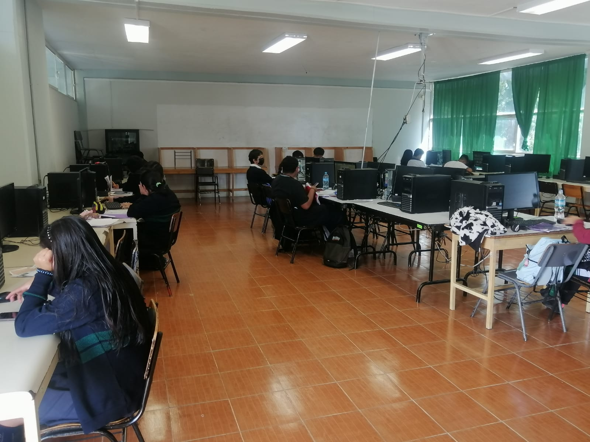
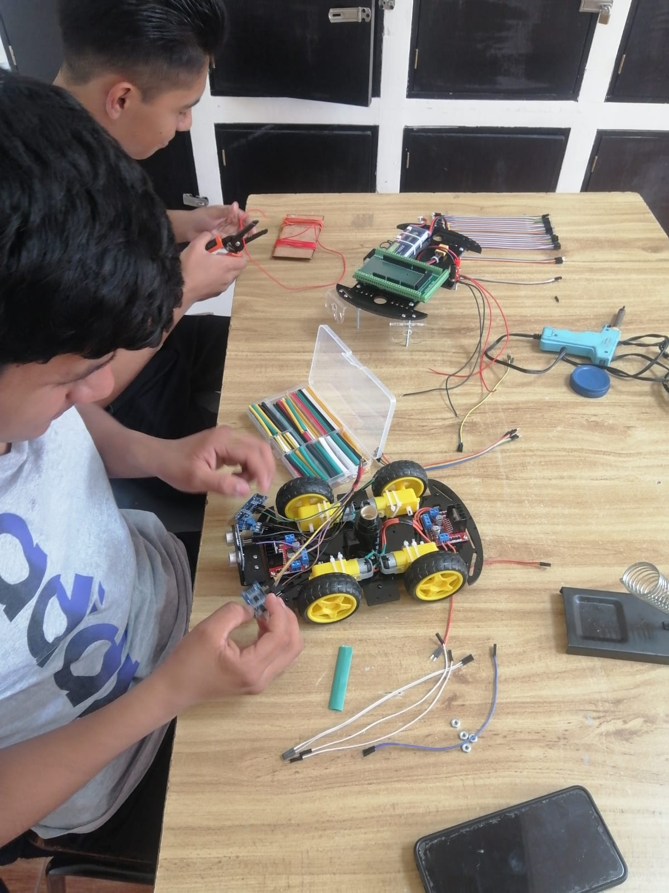
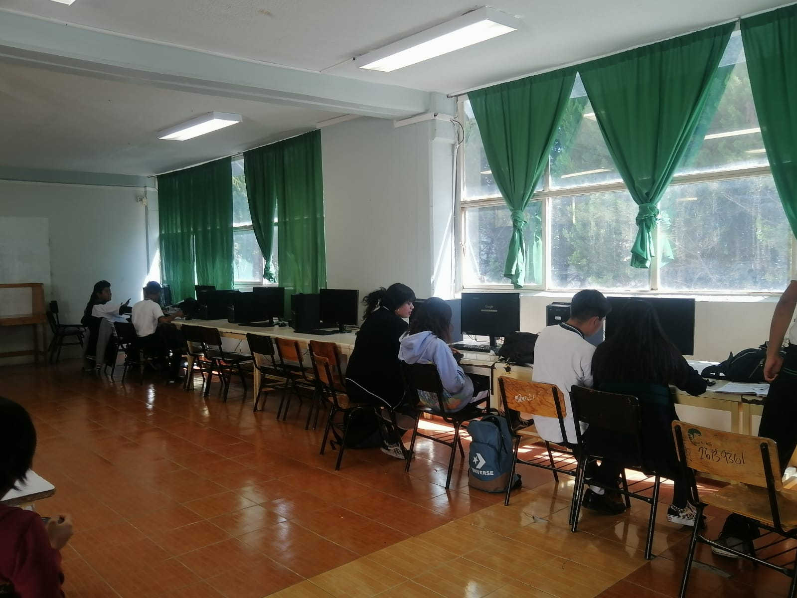
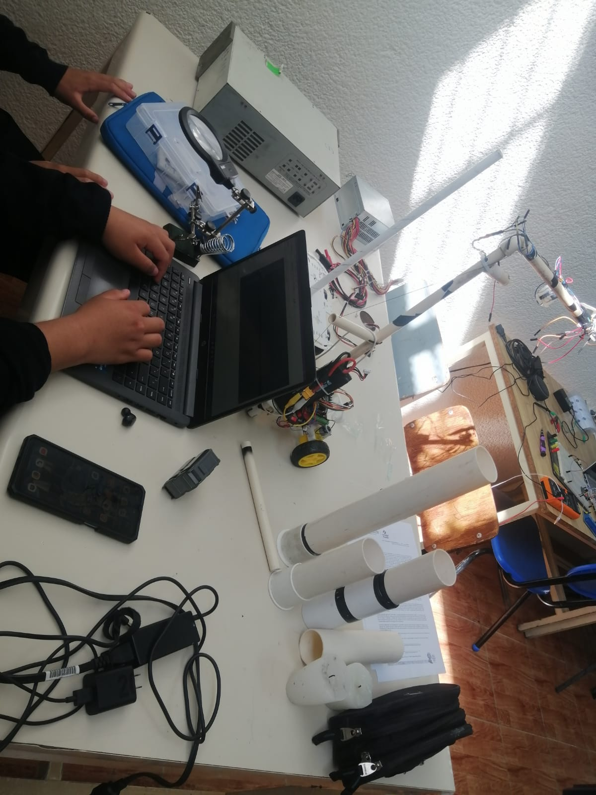

INFORMATICA: Implementa proyectos de software aplicativo para
la automatizacion de proyectos
Dentro del desarrollo laboral nuestros egresados adquieren todas estas competencias :
❑ Liderar acciones emprendedoras e innovadoras de acuerdo con los requerimientos personales y
laborales en el marco de la sostenibilidad.
❑ Procesar y comunicar información, utilizando herramientas avanzadas para la elaboración de
documentos digitales, para la expresión de ideas/proyectos y distribución de información.
❑ Analizar requerimientos de procesamiento y sistematización de información de áreas específicas
considerando los requisitos del usuario para atender necesidades organizacionales.
❑ Diseñar y desarrollar proyectos de tecnología de información, para la generación de alternativas
de solución, de los requerimientos del usuario.
❑ Implementar proyectos de software aplicativo para la automatización de procesos de la
organización, cumpliendo con los requisitos definidos.
❑ Dar mantenimiento a software y/o Tecnologías de Información y Comunicación (TIC) y asistencia
a usuarios, aplicando estándares y mejores prácticas en soporte técnico para conservar la
disponibilidad y desempeño de dichos recursos.
❑ Administrar áreas de tecnologías de información y comunicación, de acuerdo con las políticas y
estándares de operación y gestión informática, para brindar servicios de procesos automatizados
de información en una organización.

|
SISTEMAS ELECTRONICOS: Opero circuitos electronicos, analogicos,
digitales y controladores electronicos basicos
Dentro del desarrollo laboral nuestros egresados adquieren todas estas competencias :
❑ Liderar acciones emprendedoras e innovadoras de acuerdo con los requerimientos personales
y laborales en el marco de la sostenibilidad.
❑ Identificar las características técnicas de maquinaria, equipo y componentes electrónicos
mediante la interpretación de documentación técnica.
❑ Validar la operación de maquinaria y equipo, mediante la medición de variables eléctricas y
electrónicas.
❑ Proteger la integridad física del trabajador y de terceros, aplicando la normatividad vigente en
materia de seguridad e higiene.
❑ Instalar maquinaria y equipo electrónico, aplicando procedimientos preestablecidos por el
fabricante.
❑ Instalar sistemas de cableado estructurado, empleando diferentes tecnologías.
❑ Manejar circuitos eléctricos básicos, identificando sus fundamentos y principios de operación.
❑ Manejar los fundamentos de programación estructurada, aplicados en dispositivos electrónicos
programables.
❑ Operar circuitos electrónicos analógicos, digitales y controladores electrónicos básicos
presentes en diversos sistemas, considerando sus principios de funcionamiento.
❑ Operar sistemas electrónicos, mediante el uso de microprocesadores, microcontroladores e
interfases

|
ADMINISTRACION: Elaborar documentacion administrativa mercantil y contable.
Las competencias profesionales del egresado de la carrera de PT-B en Administración son:
Liderar acciones emprendedoras e innovadoras de acuerdo con los requerimientos personales y
laborales en el marco de la sostenibilidad.
Elaborar documentación administrativa, mercantil y contable, empleando la normatividad legal
vigente y las políticas establecidas por la organización.
Aplicar el proceso administrativo, de acuerdo con el tipo de actividad que desarrolle para
coadyuvar a la efectividad productiva de la organización.
Administrar las actividades de crédito y cobranza, mediante la aplicación de normas legales,
procedimientos y políticas para eficientar el proceso de control y seguimiento de las cuentas por
cobrar de una organización.
Administrar la información financiera, comercial, de recursos humanos y materiales de la empresa,
aplicando software contable-administrativo para su control.
Administrar almacenes e inventarios de productos y materiales, a través de normas legales,
métodos, técnicas y procedimientos de control establecidos, para coadyuvar a eficientar el
proceso productivo de la organización.
Aplicar estándares de calidad en todas las actividades que realiza, para coadyuvar en la eficiencia
del proceso productivo de la organización.

|
INTELIGENCIA ARTIFICIAL: Domina tecnicas analiticas como el machine-learning y analitica de texto
❑ Promover en su desempeño profesional una cultura del emprendimiento con propuestas
innovadoras, fomentando su desarrollo humano y social en el marco de la sostenibilidad.
❑ Proporcionar soluciones a las necesidades del sector productivo con inteligencia artificial.
❑ Recopilar grandes cantidades de datos revueltos y transformarlos a un formato más utilizable.
❑ Dominar modelos matemáticos estocásticos, soportados por herramientas computacionales
de vanguardia.
❑ Proporcionar servicios de aprovisionamiento en la nube.
❑ Aplicar modelos de referencia para los protocolos de comunicación de las redes.
❑ Dominar técnicas analíticas como el machine-learning, deep-learning y analítica de texto.
❑ Utilizar modelos predictivos con base en las actividades o proyectos de una empresa.
❑ Utiliza modelos lineales y no-lineales de optimización para resolver problemas complejos
mediante herramientas computacionales.
❑ Procesa datos empleando métodos matemáticos, estadísticos que sirvan para el aprendizaje
automático.
❑ Presenta los datos como insumo del cómputo cognitivo con el propósito de resolver problemas
de optimización.
❑ Aplica modelos matemáticos que contribuyen a la seguridad de datos y de sistemas
informáticos.
❑ Presenta los datos procesados con modelos matemáticos como apoyo para agilizar la
inteligencia de negocio ante la diversidad de públicos.
❑ Aplicar técnicas de atención al cliente en diversos contextos laborales, con base en los
estándares y procedimientos administrativos de los servicios ofrecidos por una empresa.

|